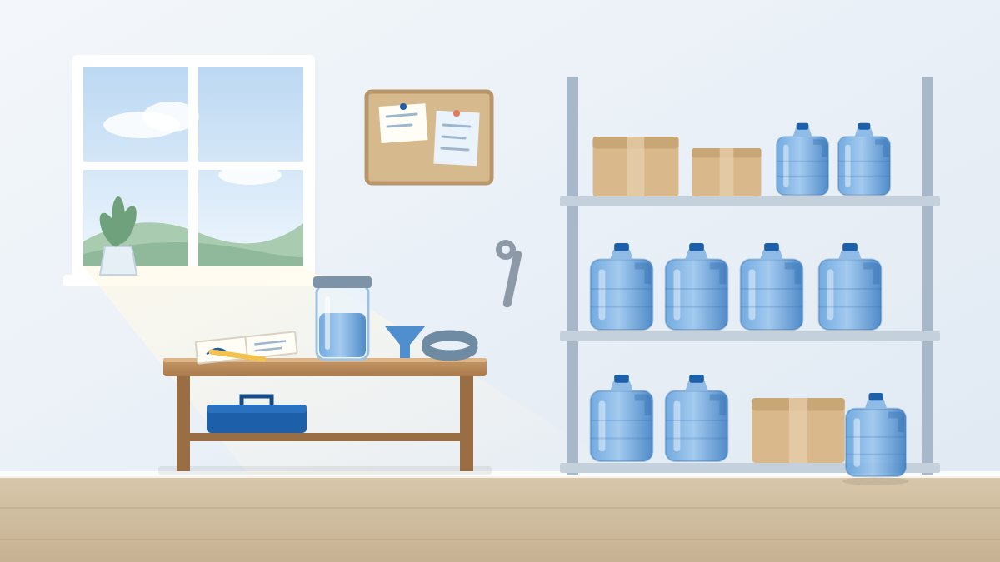

SmartWaterBox Review: An Honest Look at the DIY "Water From Air" Guide
Wondering how your family would get water during a long outage or a "boil water" notice? We looked past the hype to answer three questions: what is SmartWaterBox, does the idea make sense, and who is it for?
- What it is
- A downloadable do-it-yourself guide (not a ready-made device)
- Main topic
- Building a small device that collects water from humidity in the air
- Price
- $39, one-time (check the official site for the current price)
- Refund policy
- 60-day money-back guarantee, processed by ClickBank
- Best for
- DIY-minded people interested in emergency preparedness
Why emergency water matters
U.S. preparedness guidance recommends storing at least one gallon of water per person per day for several days (Ready.gov). Most families never store that much, so some look for a backup way to produce water at home. Collecting moisture from the air is one of those ideas.

What is SmartWaterBox?
A digital guide you download right after purchase, with plans, a materials list, step-by-step building instructions, safety and storage notes, and bonus DIY guides.
Important: you are buying instructions, not a machine. You source the parts and build it yourself.
How does "water from air" work?
It is the same thing you see when a cold glass "sweats" on a summer day: air holds water vapor, and when it touches a cold surface, the vapor turns into droplets.
Commercial "atmospheric water generators" use this principle. The honest catch: output depends heavily on humidity and temperature, so treat it as a backup project, not your only water plan. Water collected at home should be filtered or treated before drinking, and check local rules before building.
Pros, cons and who it's for
✔ Pros: good fit if you…
- Enjoy hands-on DIY projects
- Are building an emergency or off-grid plan
- Want a low-cost guide ($39, one-time) with instant access
- Like a 60-day money-back guarantee
✘ Cons: skip it if you…
- Want a ready-to-use device
- Don't want to build or use tools
- Live in a very dry or cold climate
- Expect it to replace your water supply
Our verdict
SmartWaterBox is an affordable DIY project guide for people who like building things and want one more option in their emergency plan. It is not a miracle device, and results depend on where you live. It costs $39, is sold through ClickBank, and has a 60-day money-back guarantee, so it's a low-risk way to explore the idea. Prices can change; confirm on the official site.
Frequently asked questions
Is SmartWaterBox a physical product?
No. It is a digital guide you download. You build the device yourself using the instructions.
How much water will it make?
It depends on your humidity, temperature and how you build it. We do not promise any specific amount, and you should not rely on it as your only water source.
What if I don't like it?
Purchases through ClickBank come with a 60-day money-back guarantee. Contact ClickBank or the seller within 60 days to request a refund.